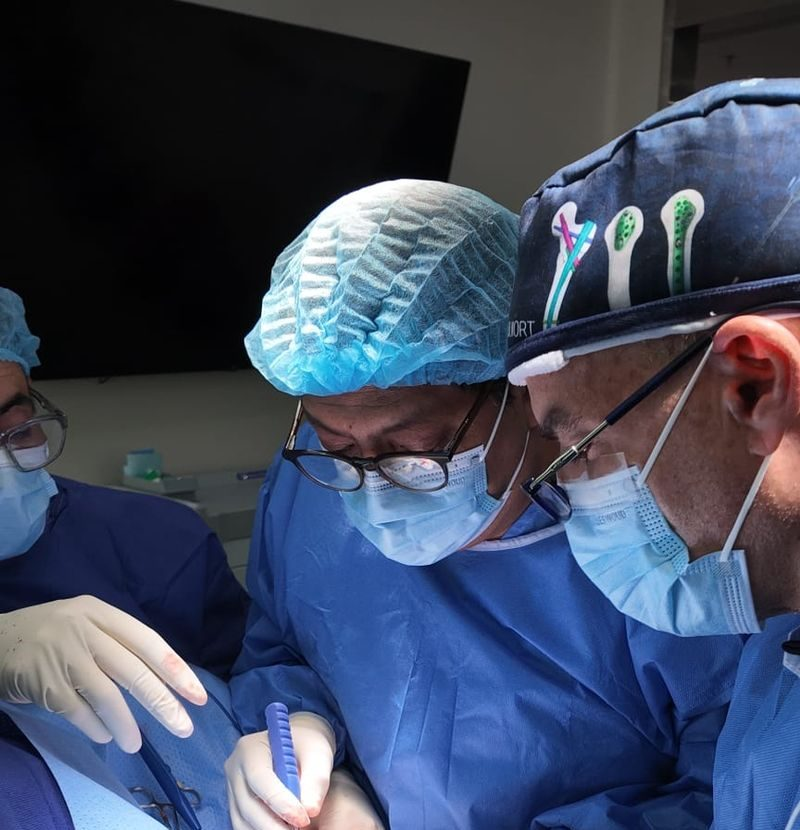

Dr. Alberto Sadun
Traumatología y OrtopediaJefe de Traumatología UEESCLINIC, Samborondón
Atiendo lesiones de rodilla, hombro y cadera, fracturas y lesiones deportivas. En la consulta lo examino, pido los estudios que hagan falta y le explico su diagnóstico y tratamiento.
¿Dónde está su lesión?
Elija la zona del cuerpo o el tipo de problema. Cada página explica síntomas, estudios y tratamiento.
Por zona del cuerpo
Rodilla
Dolor, inestabilidad o bloqueo por lesiones del ligamento cruzado anterior, los meniscos, el cartílago o la membrana sinovial. Artroscopía cuando hace falta y fisioterapia cuando no.
-
Hombro
Fracturas, luxaciones y lesiones musculares y ligamentarias.
-
Codo
Dolor al agarrar o al girar la muñeca, golpes y fracturas.
-
Mano y muñeca
Caídas sobre la mano y dedos que se traban o se adormecen.
-
Tórax
Golpes en las costillas y dolor al respirar o al toser.
-
Espalda
Dolor de cuello, de espalda o de cintura, tratado según su causa.
-
Cadera
Dolor de cadera, artrosis, reemplazo total y fractura de cadera.
-
Tobillo y pie
Torceduras, fracturas y dolor en el talón o en la planta del pie.
Por tipo de problema
-
Fracturas
Huesos rotos por caídas o golpes: yeso, férula o cirugía con placas o tornillos.
-
Lesiones deportivas
Esguinces, tendinitis, desgarros musculares y lesiones por sobrecarga.
-
Artrosis
Desgaste de la rodilla, la cadera y otras articulaciones.
-
Osteoporosis
Huesos frágiles: densitometría y prevención de fracturas y caídas.
Así se ve una artroscopía de rodilla
Entro a la rodilla con una cámara por dos o tres incisiones pequeñas. Desde la pantalla reparo meniscos y ligamentos sin abrir la articulación.
Por lo general el paciente vuelve a casa el mismo día o al siguiente. El tiempo de recuperación depende de la lesión y del procedimiento.
Antes y después de la cirugíaCómo prepararse, qué esperar el día de la operación y los cuidados en casa.Cómo es la atención
Del primer mensaje al alta, con el mismo médico en cada paso.
Escríbanos por WhatsApp
Le damos su cita. Si se acaba de lesionar, diríjase a la emergencia de UEESCLINIC y llámenos al +593 98 078 4857.
Consulta y examen
Revisamos sus estudios y lo examino. Si hace falta, pedimos radiografía, ecografía o resonancia magnética.
Diagnóstico y plan
Le explico qué tiene y qué opciones hay. Muchas lesiones mejoran sin cirugía.
Tratamiento
Fisioterapia, medicación, yeso o cirugía en el quirófano de UEESCLINIC, según su caso.
Controles
Seguimos su recuperación en consulta hasta que vuelva a sus actividades.
Si tiene seguro, traiga los datos de su póliza: le llenamos los formularios para su reembolso. Cómo funciona
Sobre mí
Me formé en Traumatología y Ortopedia en el Hadassah Hebrew University Hospital de Jerusalén, Israel. Soy médico graduado en la Universidad Católica de Santiago de Guayaquil.
Antes de especializarme hice el internado en el Jackson Memorial Hospital con el Programa William J. Harrington para Latinoamérica. Después dirigí la investigación de la División de Cirugía de Artritis del Dr. Carlos Lavernia, en la Universidad de Miami, donde preparé artículos y trabajos para revistas médicas y congresos.
Opero en Guayaquil y Samborondón desde 2006, y desde agosto de 2021 soy Jefe de Traumatología UEESCLINIC. Mi práctica se centra en la cirugía artroscópica de rodilla: ligamento cruzado anterior, meniscos y cartílago. También trato fracturas, luxaciones y lesiones del hombro, otras fracturas y lesiones deportivas.
Soy Facultativo Adjunto del William J. Harrington Training Program.
- 2021 a la actualidadUEESCLINIC Hospital DocenteJefe de Traumatología, Samborondón
- 2002 a 2006Hadassah Hebrew University HospitalResidencia en Cirugía Ortopédica, Jerusalén
- 1998 a 2001Universidad de MiamiPrograma Harrington e investigación en reemplazo articular
Trayectoria, cursos y congresos
Trayectoria
- 2021 a la actualidadJefe de TraumatologíaUEESCLINIC Hospital Docente, Samborondón.
- 2007 a la actualidadFacultativo AdjuntoWilliam J. Harrington Training Program.
- 2006 a 2021Cirujano ortopedistaHospital Clínica Kennedy Alborada, Guayaquil. Entre 2011 y 2014 también en Medikal.
- 2002 a 2006Residencia en Cirugía OrtopédicaHadassah Hebrew University Hospital, Jerusalén, Israel.
- 2001 a 2002Medicina ruralDispensario CE.FA.S., Samborondón.
- 1999 a 2001Investigación en reemplazo articularDivisión de Cirugía de Artritis, Universidad de Miami. Director de investigación desde marzo de 2000.
- 1999Doctor en Medicina y CirugíaUniversidad Católica de Santiago de Guayaquil.
- 1998 a 1999Programa HarringtonJackson Memorial Hospital, Universidad de Miami.
Cursos y congresos
La formación continúa: talleres de artroscopía con cadáver, cursos de reemplazo articular y congresos internacionales.
Cadáver Lab de Rodilla Latinoamérica, Smith+Nephew
Boston Smith+Nephew Academy, Andover, Massachusetts, Estados Unidos.
Smith+Nephew Arthroscopic Knee Surgery Course
Andover, Massachusetts, Estados Unidos.
Cadáver Lab de Rodilla en Medicina Deportiva, Smith+Nephew Latinoamérica
Smith+Nephew, Andover, Massachusetts, Estados Unidos.
Arthrex Advanced Arthroscopy Knee Course
Naples, Florida, Estados Unidos.
Cursos anteriores
Uso de injertos osteomusculares en cirugía ortopédica y traumatológica
INDOT y Sociedad Ecuatoriana de Ortopedia y Traumatología, Ecuador.
Knee and Shoulder Intermediate Arthroscopy Workshop
Clínica Las Condes, Santiago de Chile.
Naton Academy Instructional Course
Chinese People's Liberation Army General Hospital, Beijing, China.
Fast Fix 360, Meniscal Sutures Workshop
Smith+Nephew Medical Education, Guayaquil.
PARCUS Product and Advanced Surgical Skills Technique Training for Shoulder and Knee Arthroscopy
Miami, Estados Unidos.
Arthroscopic Surgical Techniques in Sports
Escuela de Medicina de la Universidad San Francisco de Quito.
Current Concepts in Shoulder and Knee Arthroscopy
Arthrex, Guayaquil.
XIX Intermediate Shoulder Arthroscopy Course
Sociedad Colombiana de Cirugía Ortopédica y Traumatología y CLEMI, Bogotá, Colombia.
Shoulder Arthroscopy Program: Minimally Invasive Approaches to Rotator Cuff and Labrum Repair
Doral, Florida, Estados Unidos.
Quattro Workshop
Cayenne AperFix, Miami, Estados Unidos.
PARCUS Product and Advanced Surgical Skills Technique Training for Shoulder and Knee Arthroscopy
Miami, Estados Unidos.
Educational Course on Total Hip and Total Knee Arthroplasty
Memphis, Estados Unidos.
Total Knee Replacement: Primary and Revision
Universidad San Francisco de Quito.
Knee Arthroscopy Course
UHZ Sports Medicine Institute, Miami, Estados Unidos.
Wrist Arthroscopy Course
Miami Hand Center, Miami, Estados Unidos.
AO Fracture Basic Course
Nof Ginosar, Israel.
Current Concepts in Joint Replacement, Winter 2019
Orlando, Florida, Estados Unidos.
Current Concepts in Joint Replacement, Winter 2018
Orlando, Florida, Estados Unidos.
American Academy of Orthopaedic Surgeons, 2017 Annual Meeting
San Diego, California, Estados Unidos.
Current Concepts in Joint Replacement, Spring 2016
Las Vegas, Estados Unidos.
Congresos anteriores
American Academy of Orthopaedic Surgeons, 2016 Annual Meeting
Orlando, Florida, Estados Unidos.
Tercer Simposio Panamericano de Actualización en Artroscopía y Ortopedia
Viña del Mar, Chile.
Current Concepts in Joint Replacement, Spring 2015
Las Vegas, Estados Unidos.
Current Concepts in Joint Replacement, Spring 2014
Las Vegas, Estados Unidos.
Current Concepts in Joint Replacement, Winter 2013
Orlando, Florida, Estados Unidos.
Current Concepts in Joint Replacement, Spring 2013
Las Vegas, Estados Unidos.
49 Congreso Argentino de Ortopedia y Traumatología
Buenos Aires, Argentina.
48 Congreso Argentino de Ortopedia y Traumatología
Buenos Aires, Argentina.
AAOS 74th Annual Meeting
San Francisco, Estados Unidos.
Israeli Orthopaedic Society Annual Meeting
Tel Aviv, Israel.
AAOS 68th Annual Meeting
San Francisco, Estados Unidos.
AAHKS Tenth Annual Fall Meeting
Dallas, Estados Unidos.
AAHKS Ninth Annual Fall Meeting
Dallas, Estados Unidos.
Florida Orthopaedic Society 52nd Annual Meeting
Destin Beach, Florida, Estados Unidos.
III National Congress, Ecuadorian Society of Trauma, Pan-American Society of Trauma
Salinas, Ecuador.
En el quirófano de UEESCLINIC
Un equipo quirúrgico coordinado, instrumental especializado y protocolos de seguridad del paciente en cada procedimiento.



Antes de su consulta
Cuándo conviene consultar y qué llevar a la primera cita.
Lea lo que escriben los pacientes en Google o deje su reseña después de la consulta.
¿Cuándo debo consultar al traumatólogo?
- Si recibe un trauma o tiene una caída o accidente, consulte inmediatamente.
- Si el dolor es de inicio súbito en una articulación, músculo o hueso sin trauma aparente y dura más de 3 días.
- Si hay hinchazón, si no puede apoyar el pie o mover el brazo, o si sintió un chasquido al lesionarse.
Un diagnóstico temprano evita que la lesión se complique.
¿Qué debo llevar a la consulta?
Su documento de identidad, los estudios que tenga (radiografías, resonancias, ecografías y sus informes) y la lista de medicamentos que toma. Si tiene seguro, también los datos de su póliza.
Contacto
UEESCLINIC Hospital Docente, en el campus de la UEES en Samborondón.
- +593 98 078 4857
- Teléfono
- +593 98 078 4857
- Correo
- docsadun@gmail.com
- Horario
- Consulta con cita: lunes a viernes, 7:00 a 18:00Si se acaba de lesionar: diríjase a la emergencia de UEESCLINIC y llámenos al +593 98 078 4857
Sitio web: www.drsadun.org